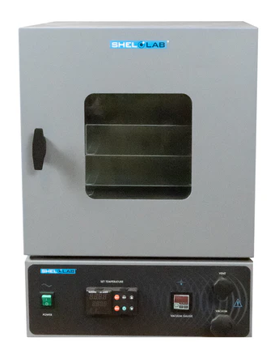
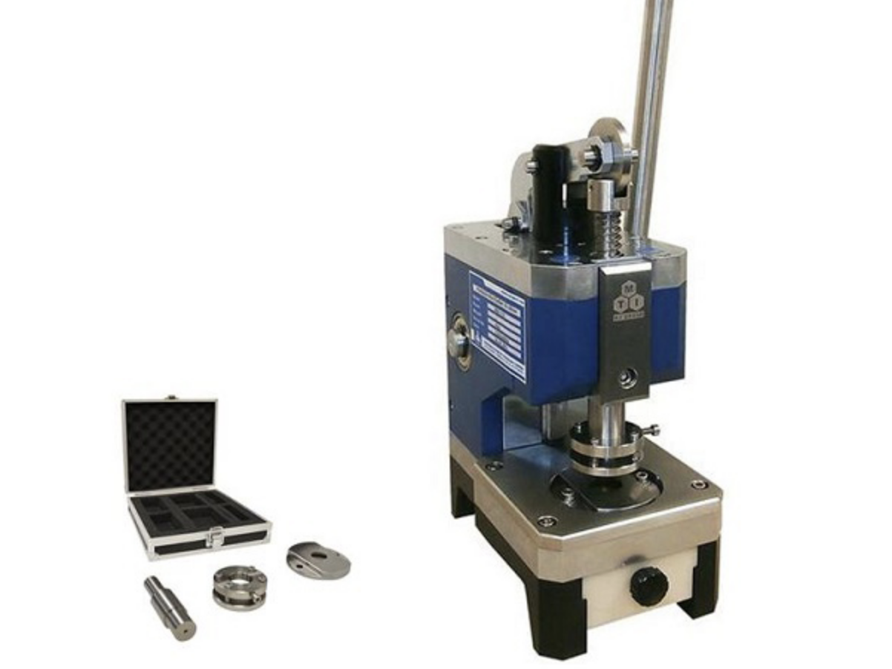

Equipment
Material Synthesis and Processing
 |
Autoclaves |
Thermo Scientific Smart2Pure DI water system DI water 18.2 MΩ·cm |
Branson Sonicator |
 |
Ossila Spin Coater |
Laurell Spin Coater |
Plasma Etcher |
3D Ball Mill |
 |
Electrospinning Machine |
Epilog Fusion Maker |
Heidelberg Maskless Aligner |
AJA E-beam Evaporator |
Lesker Sputtering Machine |
SUSS MicroTec MBJ4 Mask Aligner Dr. Hongwei Qu |
Material Characterizations
Mettler Toledo pH meter |
Electrochemical Test Cell (EL-CELL) |
Linkam Stage -196 to 600 degree C |
 |
BioLogic Portable Potentiostat |
BioLogic Potentiostat |
CHI Potentiostat |
 |
Olympus BX53M Microscope DP23 CMOS campera, 45 fps; 1.25x, 5x, 10x, 20x, 50x, and 100x objectives |
Phantom High Speed Camera |
Teledyne Princeton Spectrometer 400-1100 nm, 0.1 nm spectral resolution |
 |
Agilent UV-Vis-NIR Spectrometer Cary 5000 UV-Vis-NIR Diffuse Reflectance Accessory Cary Universal Meausremnet Accessory |
Raman Microscope and Spectrometer Laser source: 532 nm, 633 nm and 785 nm IGA and Si CCD detectors See more under OU-Raman tab. |
 |
Rigaku Computed Tomography (CT) Dr. Xia Wang |
 |
JEOL Scanning Electron Microscope Dr. Hongwei Qu |
Battery Cell Prototyping
 |
Vigor Glove Box O2, H2O < 0.5 ppm |
Thinky Mixer Up to 2000 rpm slurry mixing |
MTI Tape Casting Coater |
|  | Shel Lab Vaccum Oven |
MTI Calendering Machine |
|  | MTI Disc Cutter |
Mettler Toledo Microbalance |
MTI Crimper |
Pulse Welder |
 |
LAND Battery Cycler |
 |
BioLogic Battery Cycler |
Environmental Chamber |